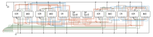

8-Bit Ripple Carry Adder
After learning about Full Adders and Ripple Carry Adders in ENGG*2410 — Digital Systems Design in the Fall semester of 2023, I wanted to
build an 8-Bit ripple carry adder at home. The issue being that I do not own a Xilinx FPGA and therefore would need a different strategy
than the one used in ENGG*2410. Luckily though I had a few breadboards and Quad 2-input Logic ICs. Specifically, XOR, AND, and OR logic
chips. Each 14 pin DIP logic chip had 4 logic gates on it. Each gate has two input pins and an output pin. This leaves one more pin of the
DIP package for a VCC connection and then one more for ground. The first step in the process was to plan out the 8-Bit ripple carry adder. A
plan of the logic was made using AutoCAD.
Note: This logic diagram scrolls horizontally.
Each full adder passes its carry out bit into the carry in bit of the following adder.
Then a new block diagram was made that incorporated the pinout of the DIP ICs. This was again made using AutoCAD and like the above image it
was exported as an SVG so that all the details can be zoomed in on. This new block diagram was made to get a better understanding for how to
plan out the wires and connections that would be needed for the physical assembly of the 8-Bit adder.
Text Text

Once this was done I began assembling the breadboards. I began by layout all the ICs I would need. In this project I made use of:
- 4 x 74x86 Quad 2-input XOR ICs
- 4 x 74x08 Quad 2-input AND ICs
- 2 x 74x32 Quad 2-input OR ICs
- 2 x DIP 8 Switches Board
- 2 x Full sized Breadboards
- 1 x Mini Breadboard
- 5 x 200Ω Resistors
- 8 x 10KΩ small Resistors
- 8 x 10KΩ larger Resistors
- Many many wires

The screen door effect is painful and the colours
are worse!
The new backlight LCD glued into the dremeled out
new shell to make it fit. No buttons are in the
shell and its not closed. I just wanted to see what
the display looked like in the shell.
It looks so good!